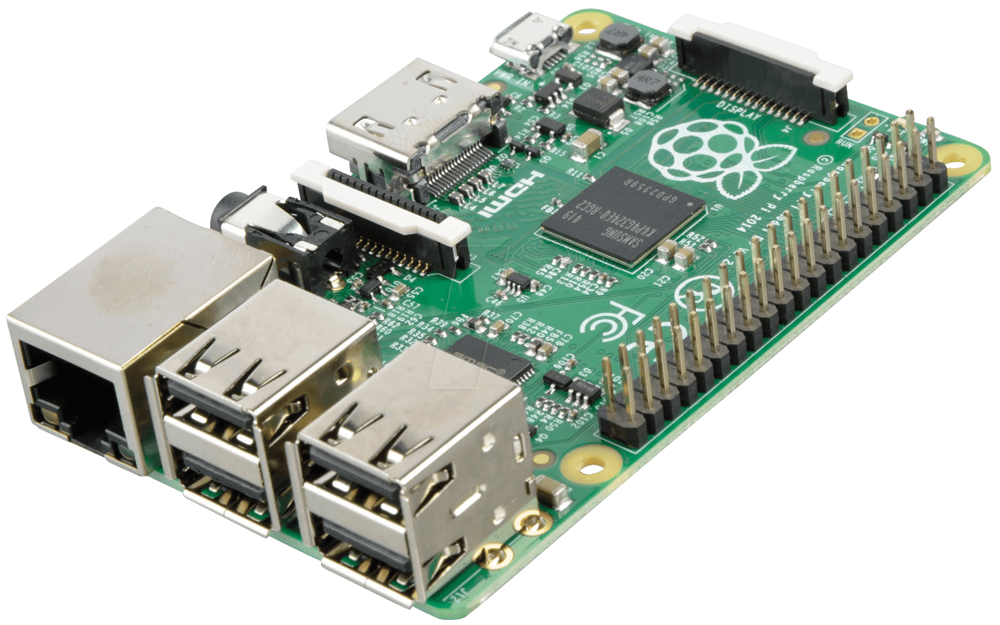
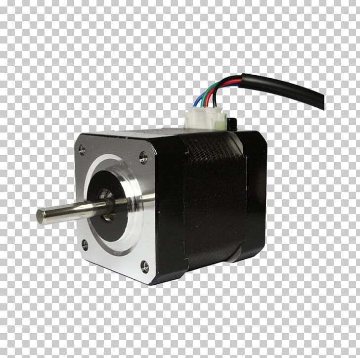
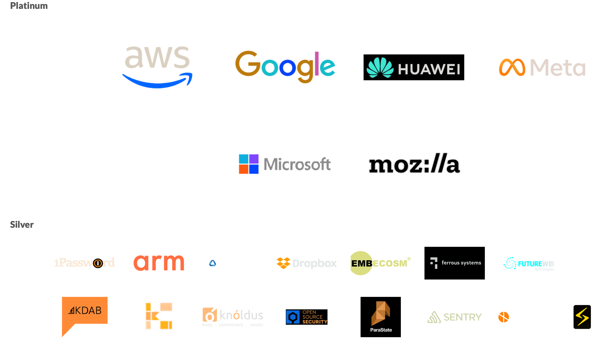

nerdschloss
Elektronisches Türschloss Marke Eigenbau
Wie section77 e. V. ein selbst entwickeltes Türschloss gebaut hat
Florian Bruder
Embedded-/Windows-Softwareentwickler
Prüfsysteme/Messtechnik
Um was geht es
section77 e. V.
Nerdschloss - Die Idee
Hardware
Software
Demo
Erweiterungen/Verbesserungen
Fragen?
section77 e. V.
Gründung 2014

Seit 2020 Nerdheim direkt im Bahnhof Offenburg
- CCC-Ableger (Chaostreff, mit ICE Halt)
- 28.05.2022 Tag der offenen Tür (0b1000 Geburtstag)
Lokaler Makerspace/Mitmachwerkstatt
Treffen/Events
- Chaostreff (ungerade Dienstage, also ca. alle 2 Wochen)
- Tech-Event (1. Samstag im Monat)
- 3D-Drucker Stammtisch (3. Donnerstag im Monat)
Die Idee
Schlüsselloser Zugang zum Nerdheim für Vereinsmitglieder
Hardware
entworfen mit FreeCAD
Schlüsselgriff
Innenleben
mit eingesetztem Schrittmotor
Raspberry PI
Schrittmotor
NEMA17
Software
Rust Anwendung + Nginx
https://github.com/section77/nerdschlossRust
https://www.rust-lang.org- Entwicklung seit 2010
- bei Mozilla Research
- Kein Garbage Collector
- Änlich schnell wie C/C++
Rust Foundation
Rust Anwendung
- In Rust entwickelte Web-Anwendung
- warp als Webserver-Framework
- rppal um die GPIOs des Pi anzusteuern
Webbenuzeroberfläche
nerdschloss/backend/src/main.rs
nerdschloss/motordriver/src/lib.rs
Nginx Konfiguration
Nginx als Reverseproxy Server
Demo
Erweiterungen/ Verbesserungen
- Hardware
- Endpositionerkennung
- Software
- CI Cross-Build
- deb Package zum installieren via apt
- Animierte UI
Fragen?
- 28.05.2022 Tag der offenen Tür (0b1000 Geburtstag)
- https://section77.de/
- Mattermost-Chat-Server https://chat.section77.de/